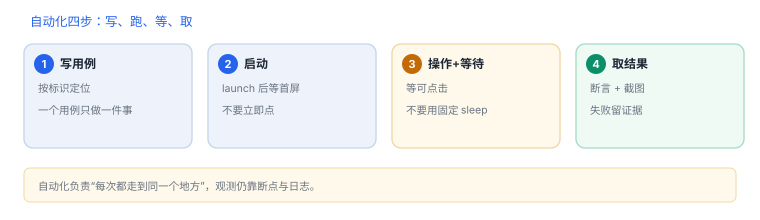

自动化：XCUITest 与 WDA
自动化只负责“把路径稳定走一遍”，不负责读内存
XCUITest 与被测应用是两个进程：测试进程通过辅助功能接口点击、输入、截图，不注入、不读内存。它解决的问题是“每次都能走到同一个地方”，剩下的观测仍靠断点与日志。
1. 两种形态
| 形态 | 怎么跑 | 适合 |
|---|---|---|
| XCTest UI 测试 | Xcode 内置，测试进程驱动应用 | 本地回归、自有应用 |
| WebDriverAgent | 设备上跑一个 HTTP 服务（默认 8100），外部脚本发请求 | 远程批量、跨语言脚本 |
2. 能力边界
| 能做 | 不能做 |
|---|---|
| 点击、滑动、输入、截图 | 读对象内存、调任意方法 |
| 断言元素与层级 | 绕过权限或签名限制 |
| 稳定复现同一条路径 | 替代断点做调用级观测 |
所以自动化和插桩是互补关系：前者保证“每次都走到”，后者负责“到了之后看什么”。
3. 定位元素：标识优先于文案
Swift：按标识查找并点击
let app = XCUIApplication()
app.launch()
let login = app.buttons["login.submit"]
XCTAssertTrue(login.waitForExistence(timeout: 5))
login.tap()标识稳定、文案会变；层级变化会让按下标的定位失效。系统弹窗（权限、更新提示）不在应用层级里，必须单独处理。

4. 一次真实排查记录：随机失败
- 现象：同一用例，十次里失败两三次。
- 先排除等待：固定
sleep在慢设备上不够，在快设备上浪费。 - 改显式等待：等“元素可点击”，而不是等固定秒数。
- 再查动画：转场未结束时点击会落到空处。
- 结论与限制：记录“等待策略不当”，并注明结论只对该机型与系统版本成立。
5. 与分析工作的配合
| 步骤 | 自动化做什么 | 你做什么 |
|---|---|---|
| 触发 | 稳定进入目标页并下拉刷新 | 在固定位置下断点 |
| 观测 | 保证时序一致 | 读参数、返回值、调用栈 |
| 复现 | 一键重跑 | 对比两次差异 |
6. 失败分流
| 现象 | 原因 | 查哪里 |
|---|---|---|
| 元素找不到 | 标识缺失或层级变化 | 打印元素树补标识 |
| 点了没反应 | 元素存在但不可交互 | 等待可点击状态 |
| 只能模拟器跑 | 签名或设备限制 | 核对测试构建 |
| 权限弹窗卡住 | 系统弹窗不在应用层级 | 统一处理或预置权限 |
7. 数据细节：一次 UI 测试的时间构成
| 阶段 | 量级 | 优化手段 |
|---|---|---|
| 启动应用 | 1–3 秒 | 减少冷启动次数，复用会话 |
| 等待元素 | 0.1–2 秒 | 显式等待替代固定 sleep |
| 操作与转场 | 0.3–1 秒 | 关闭动画，直接跳转 |
| 断言与截图 | 0.1–0.5 秒 | 只在失败时截图 |
一次用例超过十秒，通常不是设备慢，而是等待策略写成了固定 sleep。
实机输出：只装了命令行工具时
xcode-select: error: tool 'xcodebuild' requires Xcode, but active developer directory
'/Library/Developer/CommandLineTools' is a command line tools instance读法：自动化依赖 XCUITest 与模拟器管理，这些只在完整 Xcode 里提供；只装 Command Line Tools 时，xcodebuild 会直接报这条错。遇到它不要怀疑脚本，先确认 xcode-select -p 指向。
8. 自测
- 为什么 XCUITest 读不到应用内存？
- 元素定位为什么优先用标识？
- 固定
sleep与显式等待的差别在哪？ - 自动化与插桩分别解决什么问题？